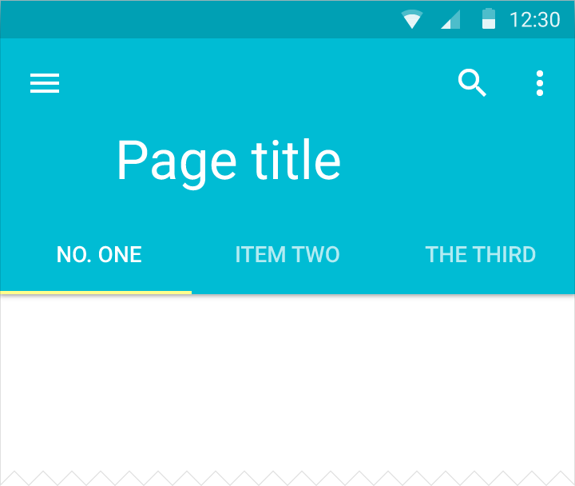
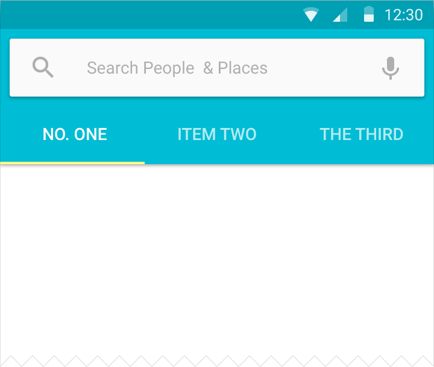
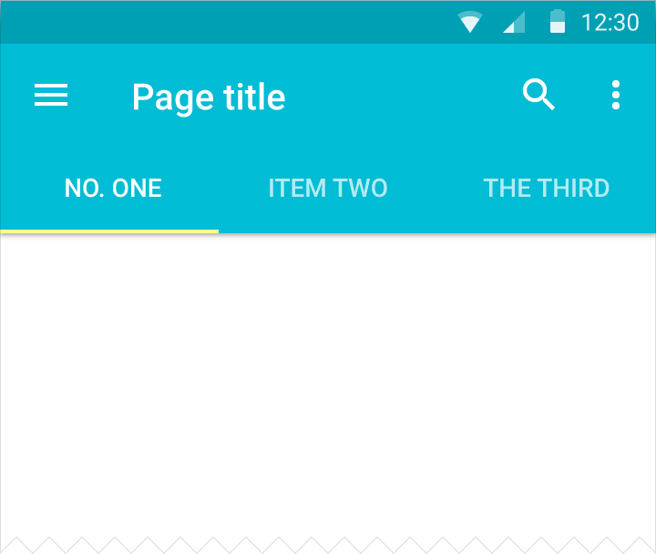
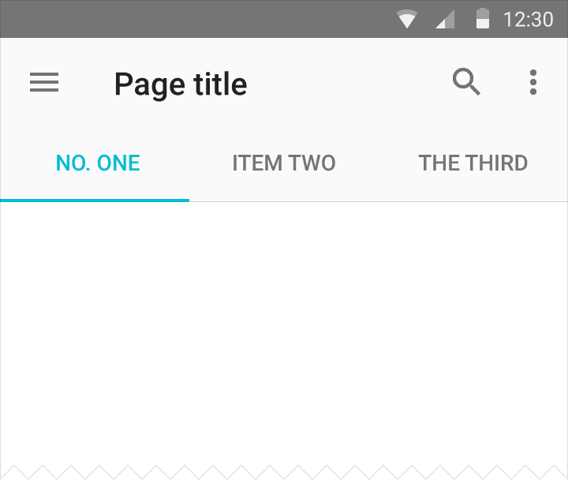
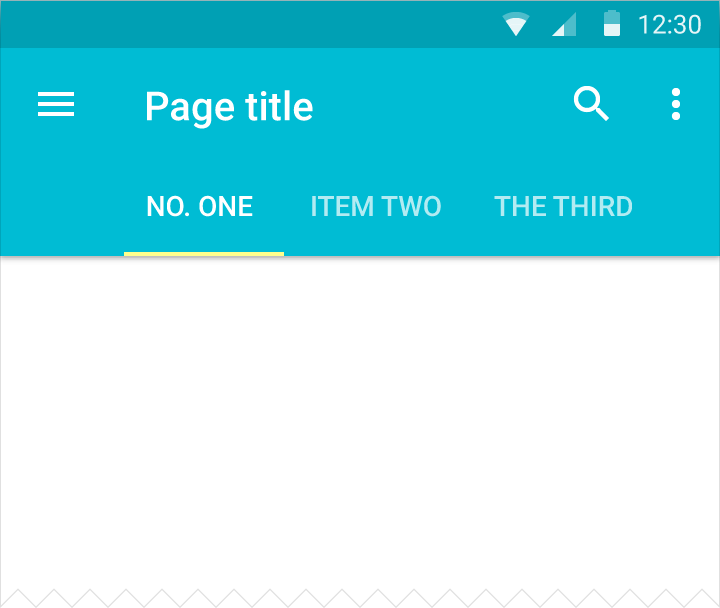
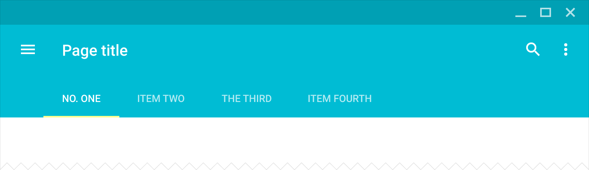
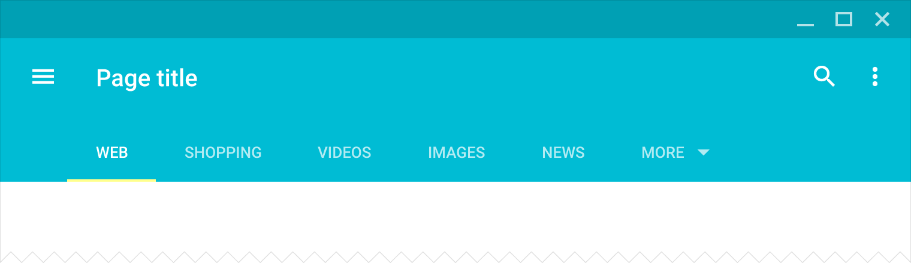
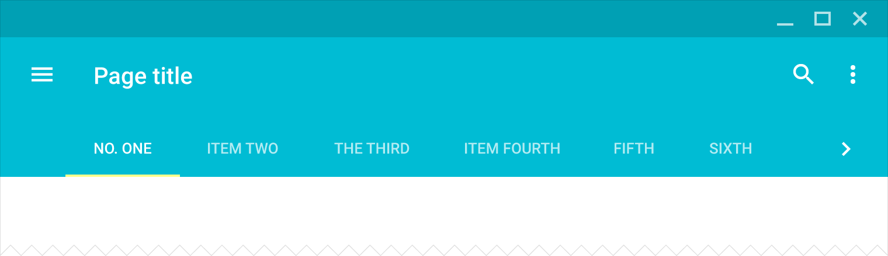
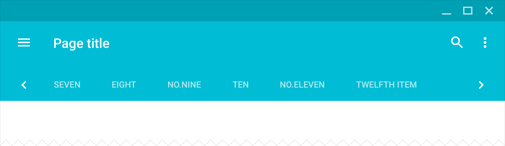

Tabs make it easy to explore and switch between different views or functional aspects of an app or to browse categorized data sets.
Usage
A tab provides the affordance for displaying grouped content. A tab label succinctly describes the tab’s associated grouping of content.
Mobile tabs

Extended app bar and tab bar

Inset search, app bar, and tab bar

Default app bar and tab bar

Default app bar and scrollable tab bar

Text color same as tab indicator
Desktop tabs

Default app bar and tab bar

Addition of the More dropdown menu

Tab overflow pagination, Step 1

Tab overflow pagination, Step 2
When to use
Use tabs to organize content at a high level, for example, presenting different sections of a newspaper. Don’t use tabs for carousels or pagination of content. Those use cases involve viewing content, not navigating between groups of content.
For more detail about using tabs for navigating top-level views, see “Top-level view strategies” in Layout > Structure > UI Regions and Guidance.
Tab characteristics
Tabs are presented as a single row.
Tabs should not be nested. Content in a tab should not consist of another set of tabbed content.
A set of tabs contains at minimum a pair of tabs and no more than six tabs.
Tabs control the display of content in a consistent location.
The tab corresponding to the visible content is highlighted.
Tabs are grouped together and the group of tabs is in turn connected with their content.
Keeping tabs adjacent to their content helps maintain the relationship between the two, as too great a separation can introduce ambiguity.
Content
Content presented in tabs can vary widely, even between tabs. For example, different years within a tabbed portfolio or different types of settings.
All content within a set of tabs should be related under a larger organizing principle (for example, Settings or Directions), with each tab’s content mutually exclusive of the others'.
Tab labels should provide meaningful distinctions that logically organize associated content.
Tab labels may be icons or text and must not be truncated.
Avoid the need for cross-tab comparison of content; significant cross-tab comparison may indicate the content would benefit from a different organization or presentation.
Types of tabs
Depending on the platform and the context of use, tabbed content can be presented as either fixed tabs or scrollable (swipeable) tabs.
Fixed tabs
Fixed tabs display all tabs concurrently and are best used with content that benefits from quick pivots between tabs, such as switching transportation methods for directions in Google Maps.
The maximum number of tabs is limited by the view’s width. Fixed tabs have equal width, based on the widest tab label. To navigate between fixed tabs, touch the tab or swipe the content area left or right.
Scrollable tabs
Scrollable tabs display a subset of tabs at any given moment, and can contain longer tab labels and a larger number of tabs. They are best used for browsing contexts in touch interfaces when users don’t need to directly compare the tab labels.
To navigate between scrollable tabs, touch the tab, swipe the tabs left or right, or swipe the content area left or right.
Specs
Fixed and full-screen width
Tab width: 1/3 of screen
Tab indicator: 2dp height
Text: 14sp Roboto Medium
Text is centered in the tab cell
Active text color: #fff or secondary color
Disabled text color: #fff 60%
Scrollable
Tab width: 12dp + word length + 12dp
Tab indicator: 2dp height
Text: 14sp Roboto Medium
Active text color: #fff or secondary color
Disabled text color: #fff 60%
Desktop/tablet
Tab width: 24dp + word length + 24dp
Tab indicator: 2dp height
Text: 14sp tablet, 13sp desktop Roboto Medium
Active text color: #fff or secondary color
Disabled text color: #fff 60%
Tab touch target animation